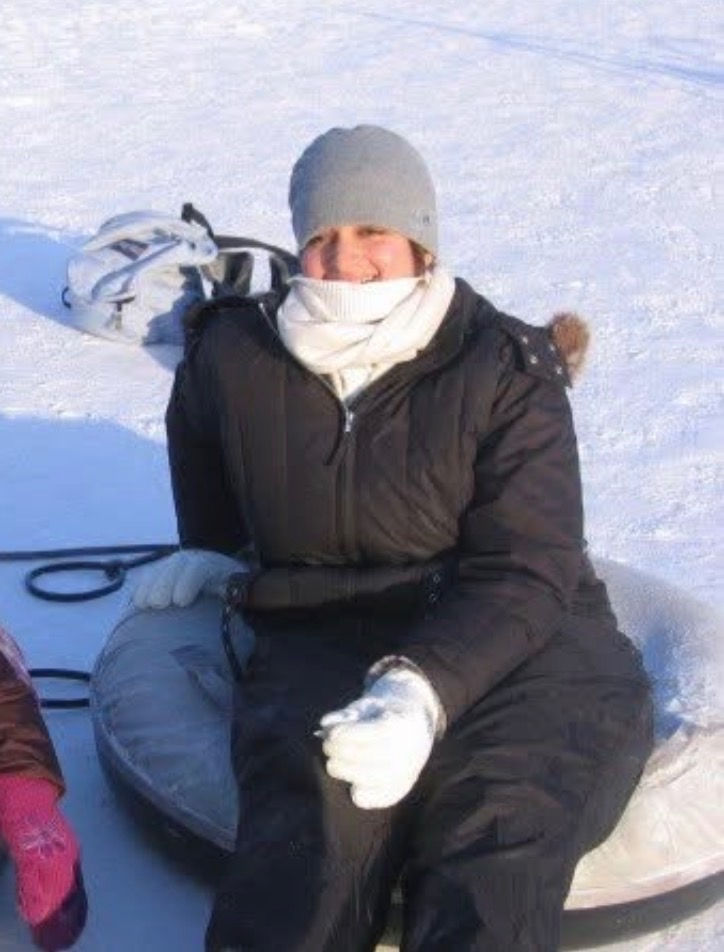
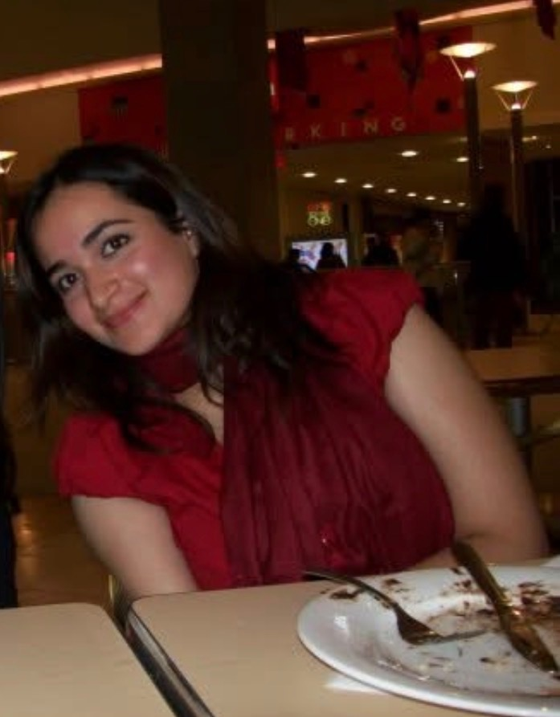

People often think I started out strong, and that I always loved fitness or that I loved lifting weights.
The truth is, I hated it.
I hated everything about weight training and fitness.
I spent my childhood being told I was overweight and that weight training was something men did, not me. It was a world I never wanted or needed to belong in.
I grew up in a country and culture where being small was a cherished prize. And everyone around me had that prize, so I was always left desiring it.
And if I ever forgot that being thin was the prize, there was always someone out there to remind me that’s what I should be chasing.
Otherwise, I lived an incredibly protected life in a place where girls needed to be protected.
My only exposure to fitness was watching sports with my four brothers. They all loved to play sports, and I got to watch them.
But what happens to a child when they’re not consistently exposed to movement or play?
They may put on weight. But more importantly, they may not develop a mind-muscle connection, baseline strength or the spatial awareness that helps them understand how to move their body.

